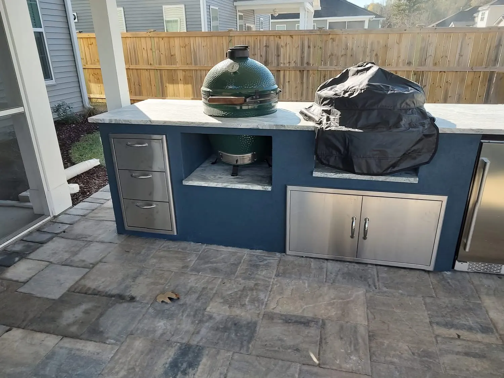
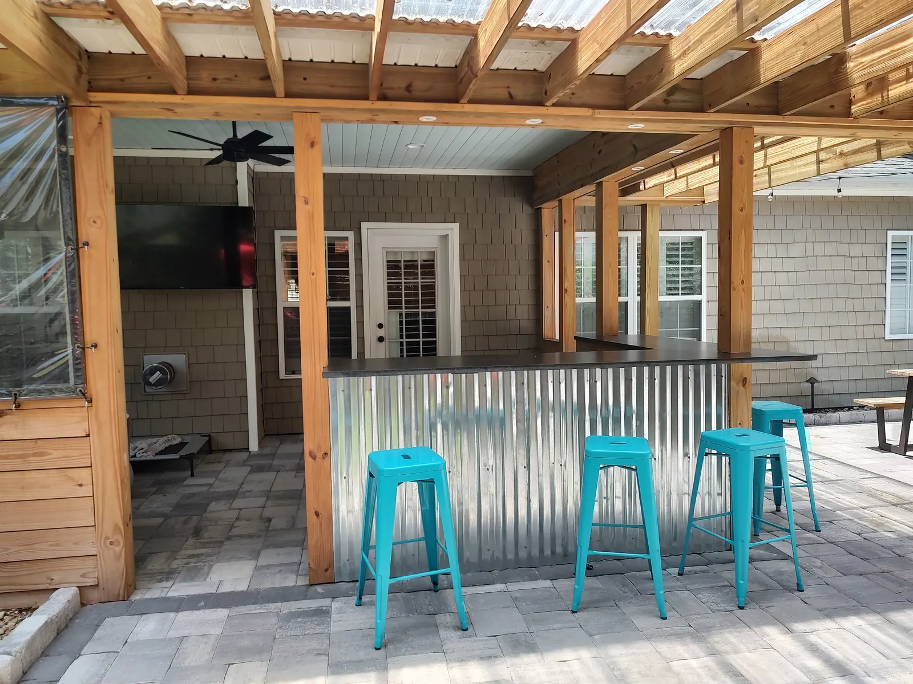
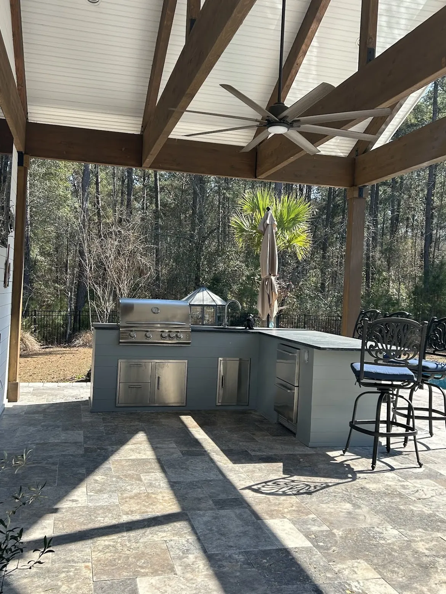

Planning an Outdoor Kitchen: The Decisions, In Order

The Decisions, and the Order They Come In
An outdoor kitchen is a working kitchen that lives outside in Charleston heat, humidity and salt air. These are the decisions that actually determine whether you use it twice a summer or four nights a week, in the order they have to be made.

Decision 1: Where the Cook Stands
Before appliances, before finishes, settle where the person cooking will be standing and where everyone else will be. A kitchen that puts the cook in a corner with their back to the party gets used less, no matter what is in it.
The most common kitchen we build is a straight run with a grill, cabinets underneath and a refrigerator. The first things most homeowners ask for are a grill, a TV, a fridge, a sink and seating for guests — and that seating is usually a bar top, which is what lets people sit and talk to whoever is cooking.
Decision 2: Under Cover or Open?
We almost always build a structure over a kitchen, and that choice shapes everything that follows: the ceiling height, the lighting, and whether you need a hood.
When a grill sits under a porch, pergola or pavilion roof, smoke and grease rise and collect on the ceiling. Over time that is a lot of cleaning, and it can damage the paint. We recommend a range hood over the grill for exactly that reason.
Where a hood is not possible, a ceiling fan plus an extra fan does the job — which is what we did on the Summerville pergola kitchen.

Decision 3: Appliances, and What You Will Actually Use
Appliances are usually the biggest part of a kitchen’s cost. We usually install Blaze, you are welcome to pick your own, and we do not add any markup to them.
What people add beyond the grill, in roughly the order it gets asked for:
- A bar top, so people can sit and talk with whoever is cooking.
- A sink for prep and cleanup, which is the difference between cooking out here and carrying everything back inside.
- A second fridge, often one with drawers.
- A flat-top griddle for breakfasts and big crowds, or a Big Green Egg beside the grill.
- A pizza oven, if you will genuinely use it.
- A built-in trash can — which we only recommend if you will keep it clean, because it can attract rats.
Decision 4: What Survives Out Here
Granite counters and stainless appliances are what hold up in this climate. For the surround you have more room to play: stone, brick, stucco, shiplap or wood, or microcement and specialized lime plasters for a smooth, modern, seamless face.
Those plaster finishes also work on an outdoor fireplace, so a kitchen and a fireplace on the same patio can read as one piece of work rather than two.
Decision 5: Light, Power and the TV
Almost everyone asks for a TV, and almost nobody thinks about where the light goes. Both are worth settling while the walls are still open.
- Light on the work surface, not in your eyes. The cook needs light aimed at the grill and the counter. Anything bright and overhead in the seating area does the opposite of what you want in the evening.
- More outlets than you think. They are almost free at rough-in and a real job to add afterwards.
- Put the TV where it is not fighting the sun and where it is genuinely under cover. A screen facing west is unwatchable exactly when people are out there.
Landscape lighting around the space runs about $200 a light plus a transformer, and it is what makes the area usable after dark rather than just lit.
Decision 6: The Utilities, Before Anything Is Poured
Gas, water and electrical all have to reach the kitchen, and the cheap moment to run them is before the patio goes down and the structure goes up.
Gas, electrical and plumbing are handled by our own team, along with the permits. Permit fees are set by each municipality; we pull them as part of the build. Allow four to six weeks for permitting before work starts.
If a kitchen is even a possibility later, run the gas and water sleeves now. An empty sleeve under a new patio costs very little; getting one under an existing patio means cutting it up.
The Three We Get Called In to Fix
- The patio is too small. This is the single most common thing we are asked to correct. A kitchen needs room for the cook to work plus a table and chairs that are not backed into the grill — and furniture takes more space on paper than people expect.
- No hood under a roof. Grease on a painted ceiling is not a cleaning problem you solve once.
- The utilities were never run. Gas and water are cheap to put in before the patio and expensive after it.
What It Costs
| Outdoor kitchen | $8,000 – $20,000+ |
|---|---|
| Pergola over it | $10,000 – $30,000 |
| Pavilion over it | $30,000 – $90,000+ |
| Patio underneath | from $18 per sq ft |
Appliances are the biggest variable, and we pass them through at cost.
For the full service, see outdoor kitchens. For how a kitchen fits into a whole backyard plan, see designing an outdoor living space.
What the Code Says About the Utilities
2020 NEC 210.8(A)(3) · Outdoor receptacles
Outdoor receptacles at a home have to be GFCI-protected, including the ones feeding an outdoor fridge or a TV.1
South Carolina rewrote 210.8(A) to cover 125-volt receptacles; outdoors they still need GFCI protection.2
The gas line to a grill or griddle is work under the 2021 International Fuel Gas Code as South Carolina adopted it, so it is permitted and inspected like any other gas piping.1 That is the practical reason to run the gas and electrical before the patio goes down: the inspector needs to see the line, and a trench is far easier to open than a finished patio.
References are to the 2021 edition South Carolina enforces today; the 2024 edition takes effect statewide on January 1, 2027. Your local building department decides how any of it applies to a particular property.
Sources
Frequently Asked Questions
How much does an outdoor kitchen cost in Charleston?
Most of ours run $8,000 to $20,000 or more. Appliances are usually the biggest part of the cost, and we do not add markup to them.
Do I need a range hood over an outdoor grill?
We recommend one whenever the grill sits under a porch, pergola or pavilion roof, because smoke and grease rise and collect on the ceiling, which means a lot of cleaning and can damage the paint. Where a hood is not possible, a ceiling fan plus an extra fan works.
What appliances should I include?
Most kitchens start with a grill, cabinets and a fridge. The common additions are a bar top, a sink, a second fridge, a griddle or Big Green Egg, and sometimes a pizza oven. A built-in trash can is only worth it if you will keep it clean, because it can attract rats.
What materials last in an outdoor kitchen here?
Granite counters and stainless appliances. The surround can be stone, brick, stucco, shiplap or wood, or microcement and specialized lime plasters for a smooth modern finish that can match a fireplace.
How long does the process take?
Allow four to six weeks for permitting before work starts. We pull the permits and run the gas, electrical and plumbing with our own crews.
See It Built
Projects where we put this into practice.
Planning a Project of Your Own?
See everything we design and build, or get in touch to talk through your ideas with Doug and Zach.